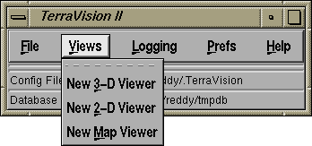
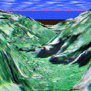
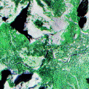
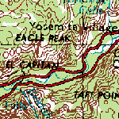

TerraVision supports a number of different viewers for displaying terrain data. The Views menu option lets you select between the different available viewers. Currently, TerraVision supports the following viewer types. Click on one of the images below to find out more about the particular viewer.
 |
 |
 |
| 3-D Viewer | 2-D Viewer | Map Viewer |